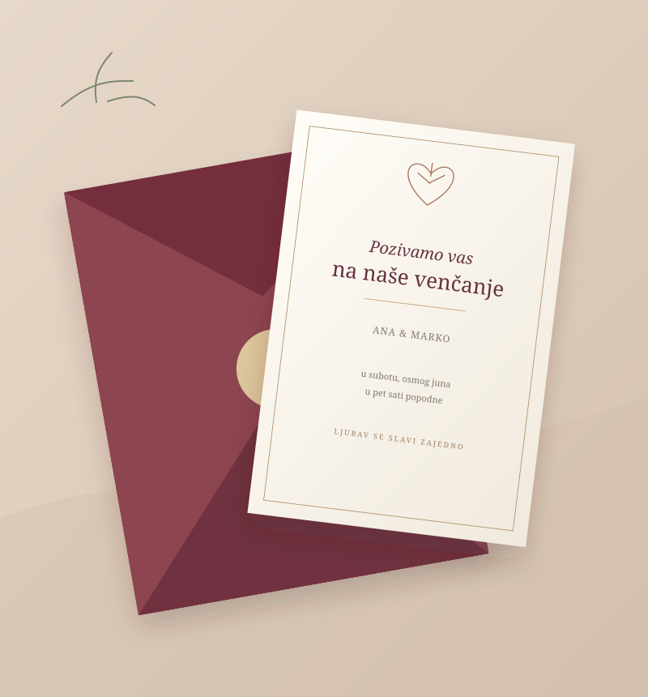
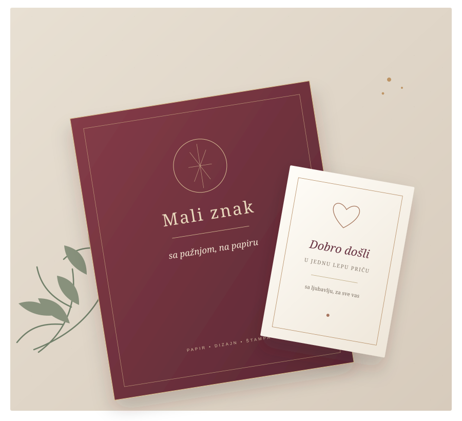
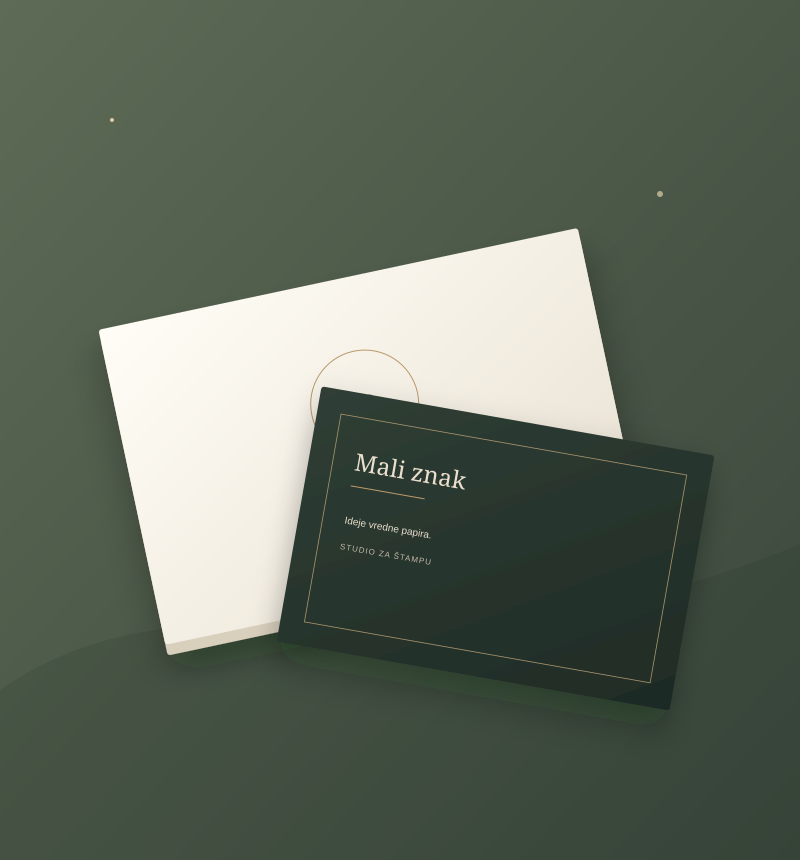
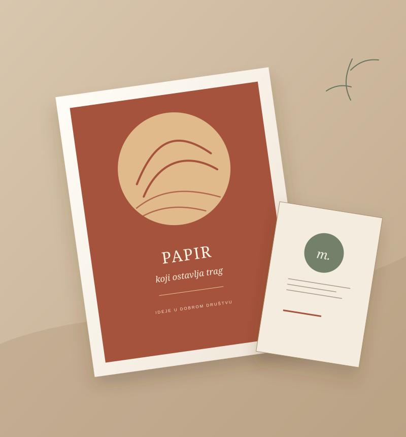
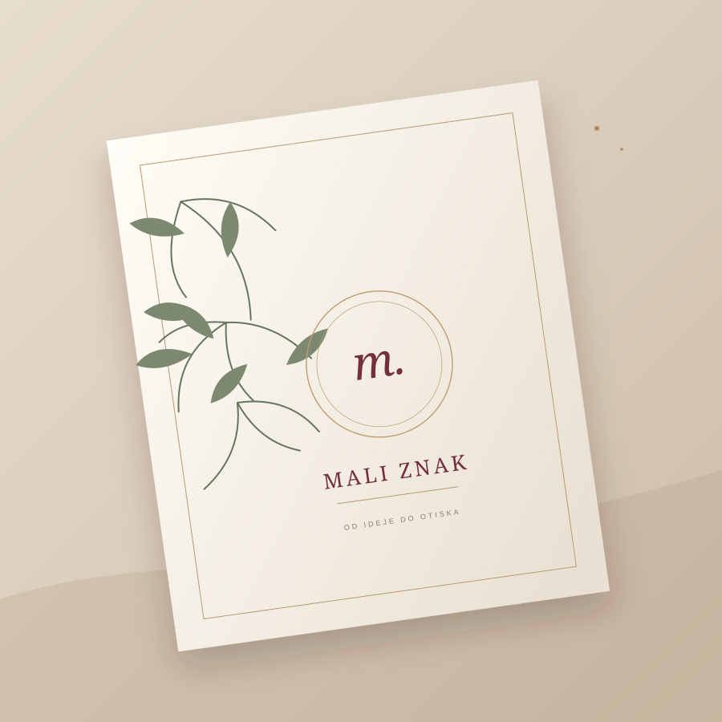

Pozivnice
Za dan koji se dugo pamti. I prvi znak svega lepog što dolazi.
Studio za štampu i papir
Pozivnice za vaše važne trenutke. Vizit karte koje vas predstavljaju. Štampa za sve što želite da podelite sa svetom.
Otkrijte šta možemo
Papir koji priča vašu pričuPravi papir. Dobar dizajn. Pažnja u svakom detalju. Sve što je potrebno da vaša poruka izgleda i oseća se posebno.

Za dan koji se dugo pamti. I prvi znak svega lepog što dolazi.

Mali format. Velika prilika da ostanete zapamćeni.

Flajeri, posteri i štampani materijal koji privlači pogled.

Nije samo štampa.
Tekstura. Boja. Trenutak kada otvoriš kovertu. Verujemo da pravi utisak živi u detaljima — zato je svaki detalj važan.
Zavirite u naš svetVaša ideja zaslužuje papir
Mali znak. Veliki utisak.